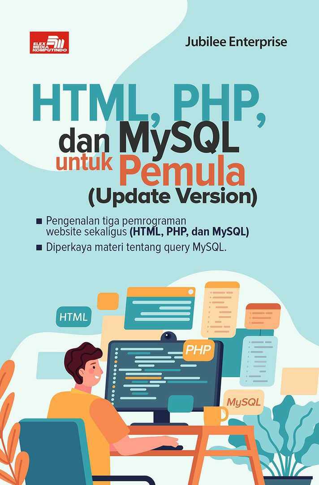

Detail :
Judul : HTML, PHP dan MySQL untuk Pemula(Update Version)
Penulis : Jubile Enterprise
Penerbit : Alex Media Komputindo
Halaman : 244
Harga : Rp. 68.000
Deskripsi :
Website kekinian yang fungsional dibentuk minimal menggunakan tiga macam pemrograman dasar, yaitu HTML, PHP, dan MySQL.
HTML digunakan untuk mendesain layout dan bentuk website, sedangkan PHP digunakan untuk membuat website dengan konten yang dinamis dan interaktif.
Jika ingin agar website itu dapat menyimpan data, maka Anda membutuhkan MySQL.
Buku ini merupakan versi terbaru dari edisi pertama yang terbukti laris di pasaran.
Didesain untuk orang awam, pembahasan di dalam buku ini bebas jargon teknis yang sulit sehingga cocok dibaca bagi semua orang.
Untuk kepentingan belajar dari nol maka buku ini cocok dipelajari sebab dalam sekali waktu, Anda bisa mempelajari tiga macam pemrograman sekaligus.
Diharapkan, sebuah website yang berfungsi dengan baik bisa dibuat dengan memanfaatkan HTML, PHP, dan MySQL.
Tool apa saja yang dibutuhkan untuk mempelajari buku ini telah tersedia dan dapat dimiliki secara gratis.
Dengan demikian, tak ada halangan untuk dapat mempelajari isi buku ini. Selain itu, buku ini diperkaya dengan materi tentang query MySQL yang tidak dapat ditemukan di dalam buku edisi pertama.
Semoga buku ini bisa membantu Anda menjadi seorang web developer yang handal dan sukses!
Untuk rekomendasi Pembelian :

 - FileVector69.png)